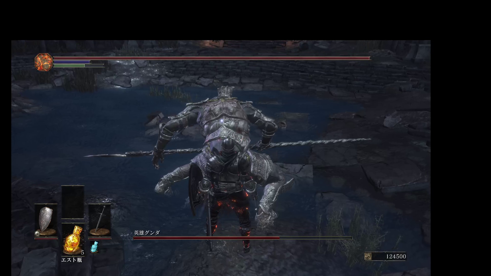
041F
武器を後ろへ引く
攻撃を読むための最初の大きな予備動作。プレイヤーに攻撃種を見せ始める。
英雄グンダの薙ぎ払い攻撃をパリィし、致命の一撃へ移行するまでの流れをフレーム単位で整理する。攻撃の予備動作、接触、パリィVFX、敵リアクション、致命演出、出血VFX、カメラ復帰、操作可能までを分析対象にした。
このページでは、パリィ対象攻撃と致命攻撃を分けて分析する。パリィ対象攻撃は攻撃アニメーション開始と思われる地点を0F、致命攻撃は致命開始を0Fとして記録する。
この攻撃は、41Fから62Fまで長く溜めを見せた後、63Fから一気に薙ぎ払いへ移る。78Fで武器が目前に迫り、80Fで接触する。見てから反応するより、予備動作を読んで対応する攻撃になっている。
| Frame | 状態 | 一言 |
|---|---|---|
| 041F | 武器を後ろへ引く | 攻撃を読むための最初の大きな予備動作。プレイヤーに攻撃種を見せ始める。 |
| 062F | 溜めの頂点 | ここで一度テンポを止める。早すぎる回避やパリィを誘うディレイとして機能する。 |
| 078F | 武器が目前へ到達 | 危険を強く認識する瞬間。ここから接触までは約2Fしかない。 |
| 080F | 武器接触 | 敵の武器がプレイヤーに重なる。パリィ成立判断の中心になるフレーム。 |
| 085F | パリィVFX | 接触から約5F後に成功演出が発生。成功したことを視覚的に確信させる。 |
| 092F | ボス弾かれ開始 | VFXの後に敵リアクションを見せる。成功感を段階的に強めている。 |
| 135F | プレイヤー操作復帰 | 成功直後にすぐ動かさず、敵が崩れる余韻を見せてから操作を返している。 |
| 150F | ボス膝つき | 致命攻撃を狙える明確な報酬状態。次に取るべき行動が分かりやすい。 |
| 157F | 致命開始 | パリィ成功から報酬演出へ移行。ここからは致命攻撃として0Fから別カウントする。 |

攻撃を読むための最初の大きな予備動作。プレイヤーに攻撃種を見せ始める。
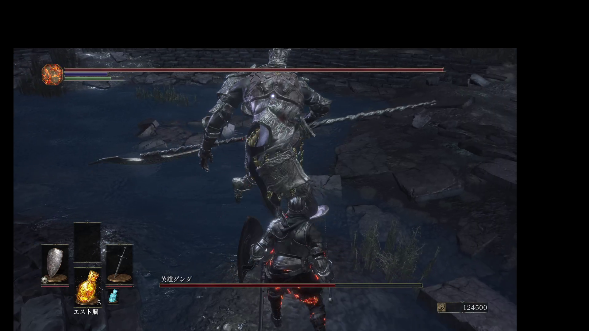
ここで一度テンポを止める。早すぎる回避やパリィを誘うディレイとして機能する。
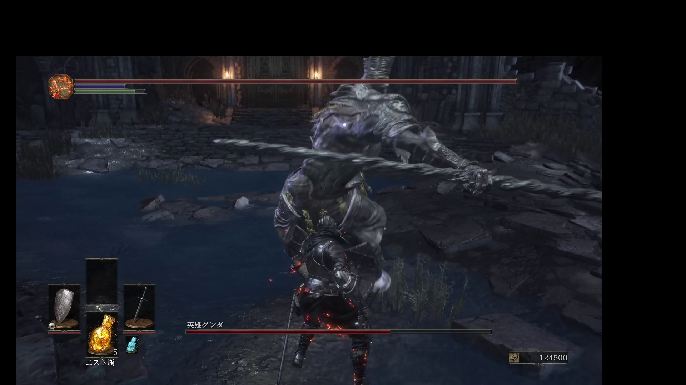
危険を強く認識する瞬間。ここから接触までは約2Fしかない。
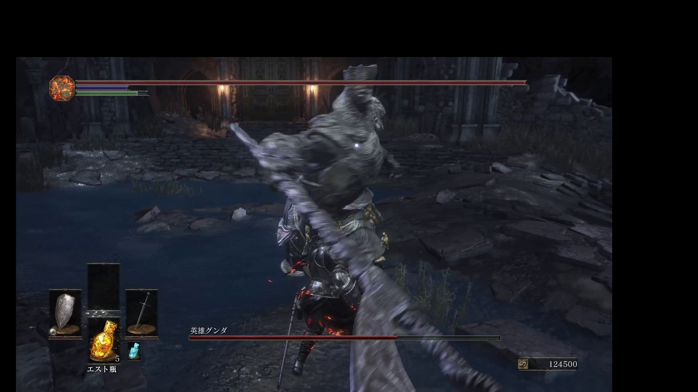
敵の武器がプレイヤーに重なる。パリィ成立判断の中心になるフレーム。
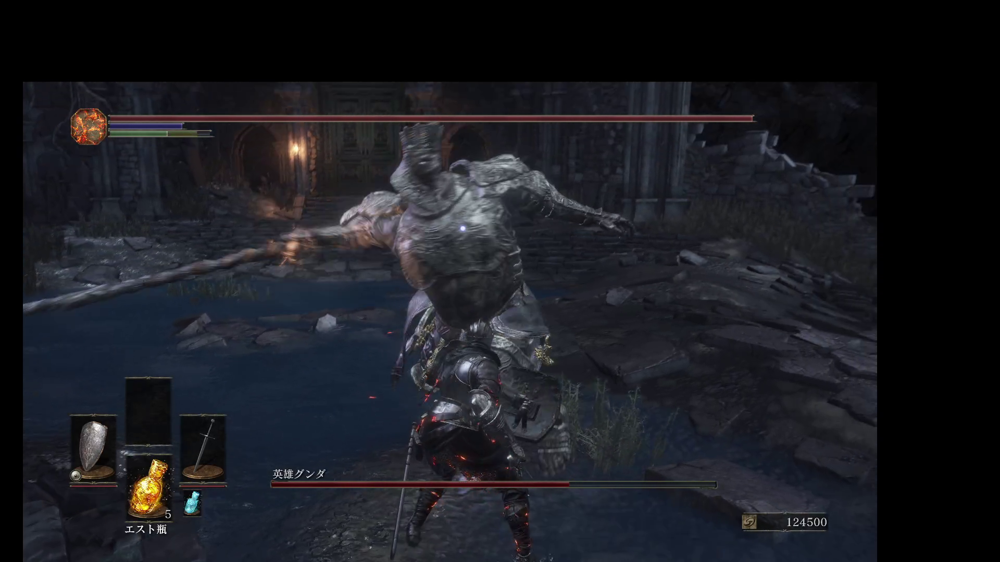
接触から約5F後に成功演出が発生。成功したことを視覚的に確信させる。
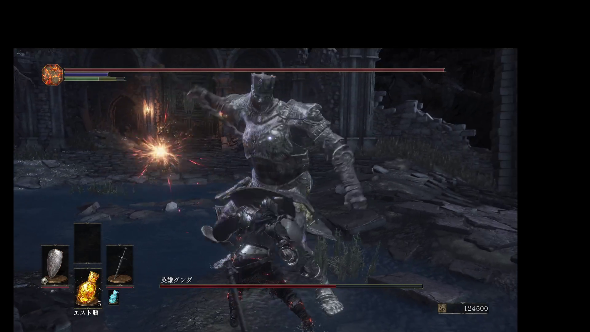
VFXの後に敵リアクションを見せる。成功感を段階的に強めている。
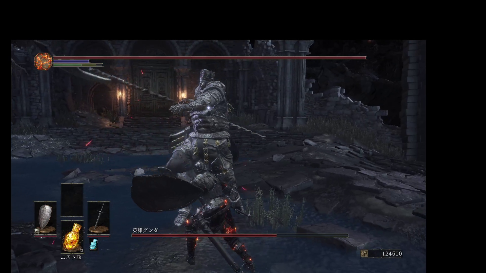
成功直後にすぐ動かさず、敵が崩れる余韻を見せてから操作を返している。
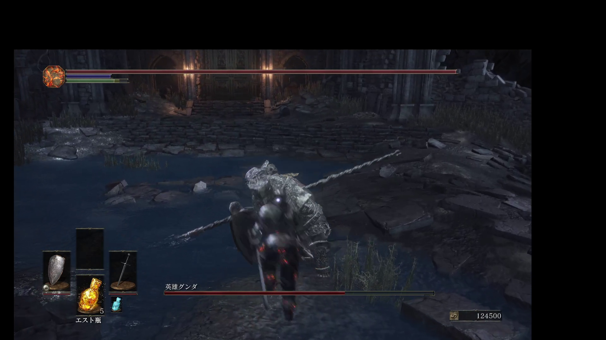
致命攻撃を狙える明確な報酬状態。次に取るべき行動が分かりやすい。
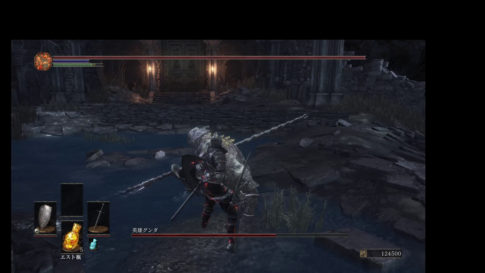
パリィ成功から報酬演出へ移行。ここからは致命攻撃として0Fから別カウントする。
致命攻撃は、致命開始を0Fとして別カウントで記録している。約293Fで操作可能になり、約343Fでボスが完全に立ち上がる。カメラ、VFX、ダメージ表示、盾の消失と復帰、ロックオン復帰が細かく挟まるため、長い演出でも退屈しにくい。
| Frame | 状態 | 一言 |
|---|---|---|
| 033F | 剣を構えて溜め | すぐ刺さず、報酬演出の前振りを作る。期待感を高める時間。 |
| 039F | カメラ急接近開始 | ヒット前にカメラで視線を寄せる。刺突の予告として機能する。 |
| 041〜044F | カメラ沈み込み＋ブラー | 画面をぼかしながら沈ませ、刺突の速度と重さを事前に感じさせる。 |
| 048〜050F | 剣が刺さる | 1回目のメインヒット。カメラ演出の後に衝撃を回収する。 |
| 052F | 1回目ダメージ表示 | 刺突の直後に数値で成功を確認させる。ヒットの理解を補助するUI。 |
| 056F | 1回目出血VFX開始 | ダメージ表示から約4F遅れて出血。情報を同時に出さず、順番に見せている。 |
| 082F | 盾消失・両手持ち準備 | 盾を消し、両手で剣を扱う姿勢へ移行。2回目の衝撃への準備。 |
| 100F付近 | 出血VFX拡散 | ヒット後もしばらく血が残り、刺突の余韻を画面に残す。 |
| 149F | 剣を抜き始める | 追撃の本動作開始。ボスもよろけ始め、二段目の報酬へ入る。 |
| 175F | 画面揺れ開始 | 2回目の衝撃直前にカメラを揺らし、引き抜きの重さを予告する。 |
| 178F | 2回目ダメージ表示 | 剣を抜ききる前に追撃ダメージを表示。成立を先に伝え、直後の動きを強調する。 |
| 184〜188F | 剣を勢いよく引き抜く | プレイヤーの振り抜きに近い動きで、2回目の気持ちよさを作っている。 |
| 186〜243F | ボスのけぞり | ボスが後ろへ崩れ、カメラも追従する。ダメージの重さを敵リアクションで示す。 |
| 191〜246F | 2回目出血VFX | 引き抜きに合わせて大きく血を出す。追撃の余韻を画面上に残す。 |
| 259F | 盾再装備 | 演出用の特殊状態から通常戦闘状態へ戻る準備。 |
| 275F | ロックオンカメラ復帰開始 | 演出カメラから戦闘カメラへ戻し、次の操作に備えさせる。 |
| 293F | 操作可能・カメラ復帰完了 | プレイヤーへ操作権を返す。報酬演出から通常戦闘へ戻る接続点。 |
| 343F | ボス立ち上がり完了 | 致命攻撃の報酬時間が終わり、ボスが再び戦闘可能状態へ戻る。 |
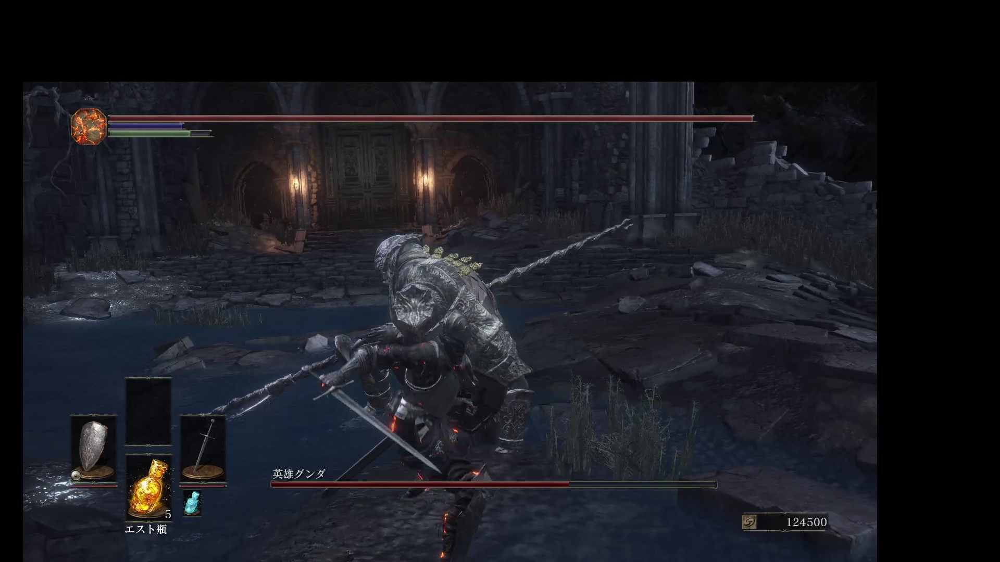
すぐ刺さず、報酬演出の前振りを作る。期待感を高める時間。
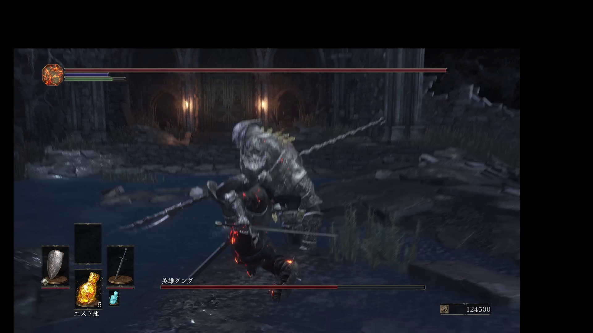
ヒット前にカメラで視線を寄せる。刺突の予告として機能する。
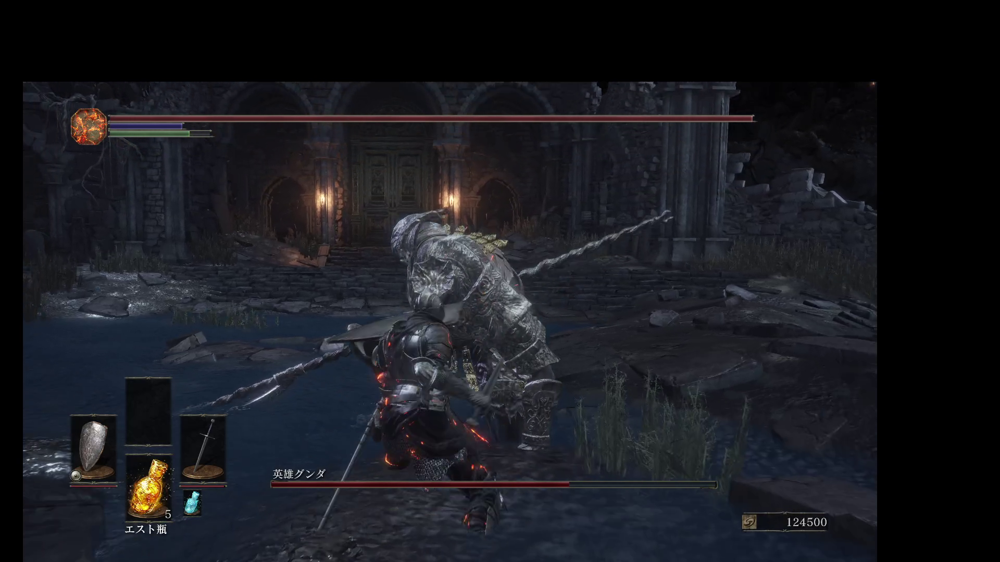
画面をぼかしながら沈ませ、刺突の速度と重さを事前に感じさせる。
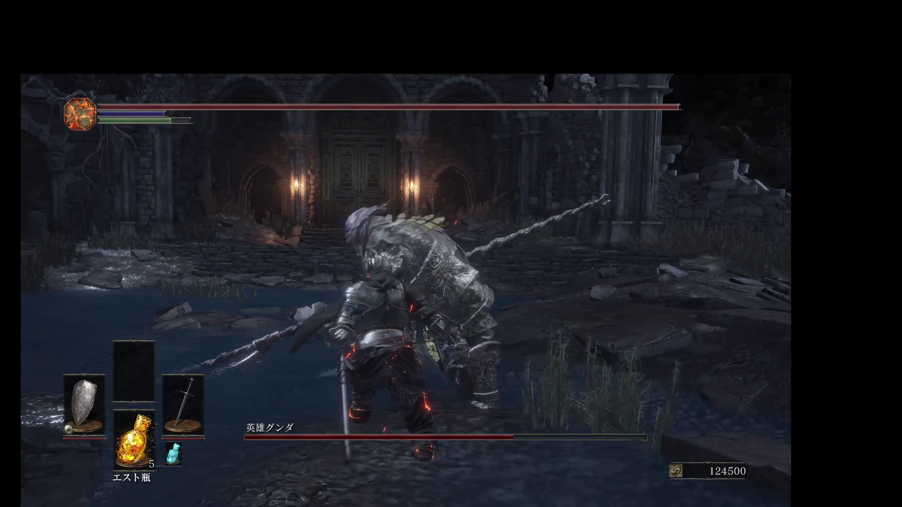
1回目のメインヒット。カメラ演出の後に衝撃を回収する。
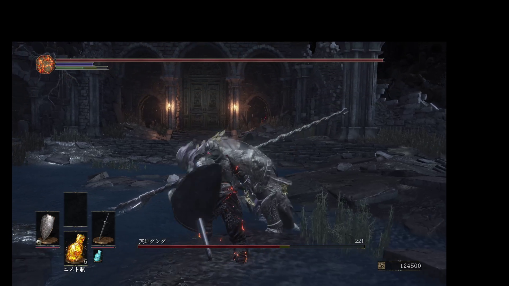
刺突の直後に数値で成功を確認させる。ヒットの理解を補助するUI。
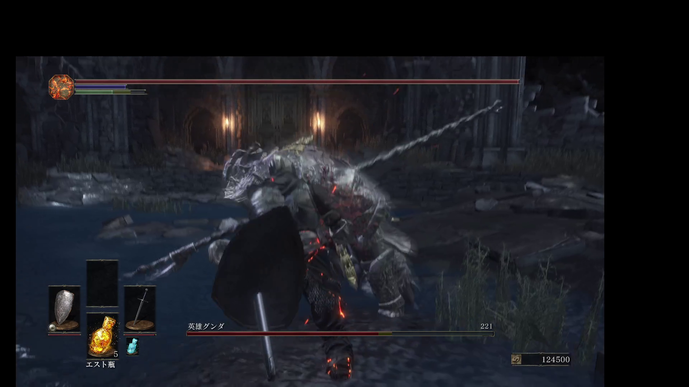
ダメージ表示から約4F遅れて出血。情報を同時に出さず、順番に見せている。
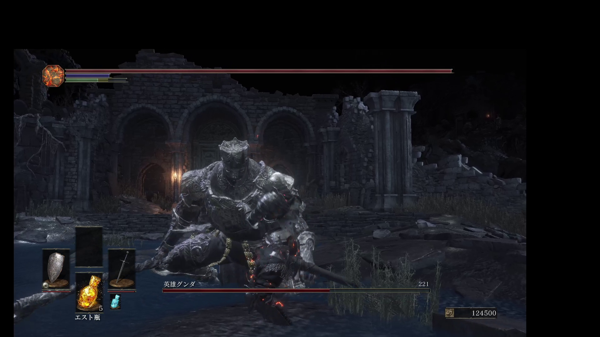
盾を消し、両手で剣を扱う姿勢へ移行。2回目の衝撃への準備。
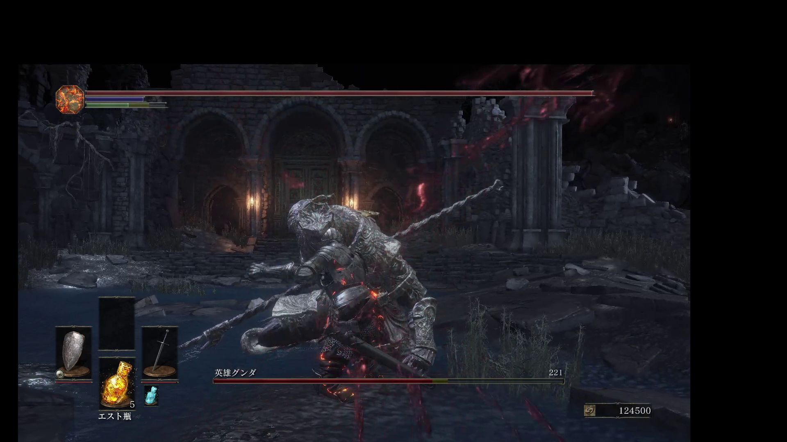
ヒット後もしばらく血が残り、刺突の余韻を画面に残す。
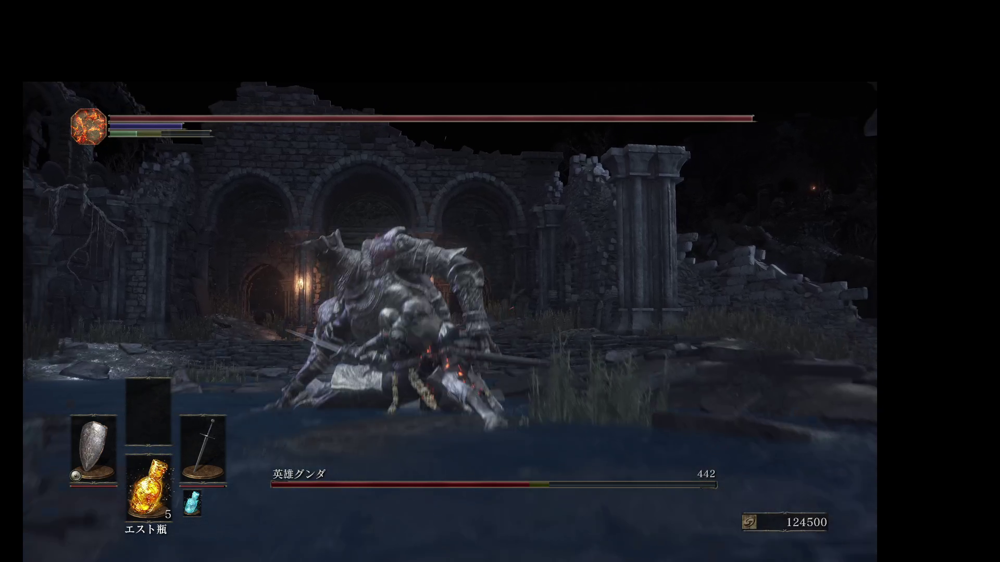
追撃の本動作開始。ボスもよろけ始め、二段目の報酬へ入る。
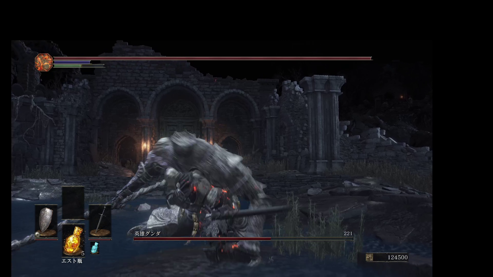
2回目の衝撃直前にカメラを揺らし、引き抜きの重さを予告する。
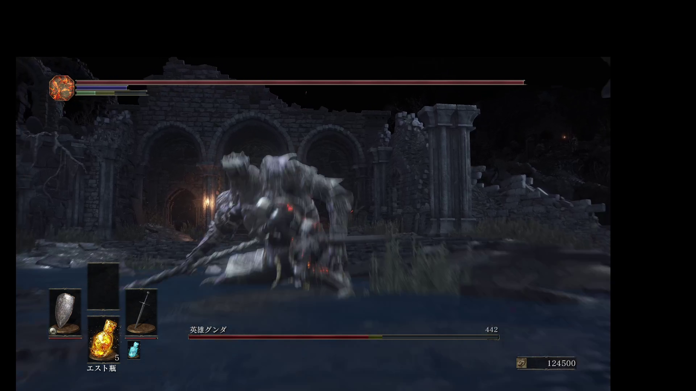
剣を抜ききる前に追撃ダメージを表示。成立を先に伝え、直後の動きを強調する。
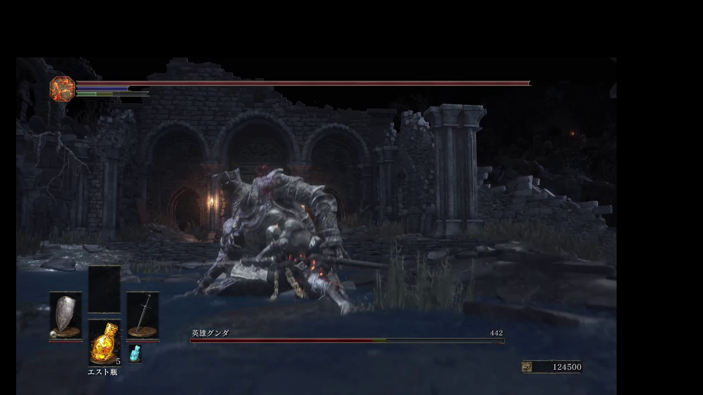
プレイヤーの振り抜きに近い動きで、2回目の気持ちよさを作っている。

ボスが後ろへ崩れ、カメラも追従する。ダメージの重さを敵リアクションで示す。
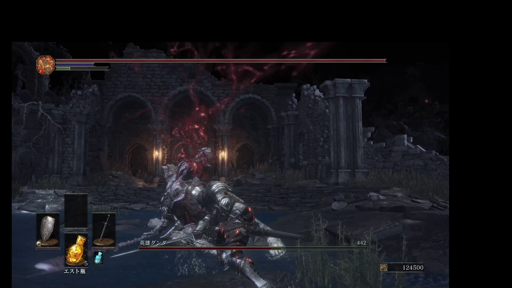
引き抜きに合わせて大きく血を出す。追撃の余韻を画面上に残す。
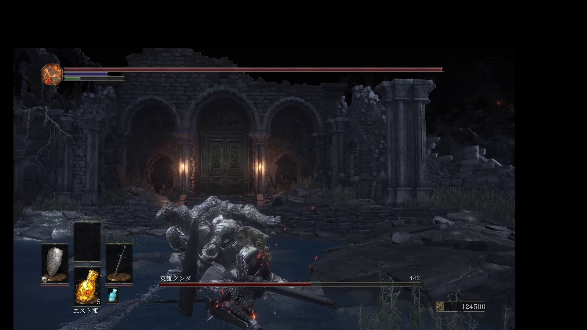
演出用の特殊状態から通常戦闘状態へ戻る準備。
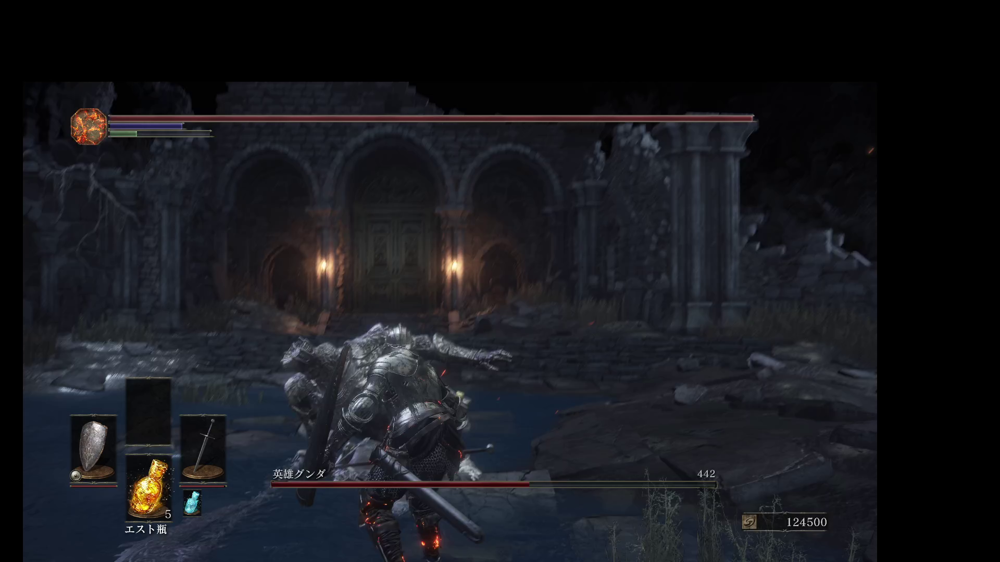
演出カメラから戦闘カメラへ戻し、次の操作に備えさせる。

プレイヤーへ操作権を返す。報酬演出から通常戦闘へ戻る接続点。
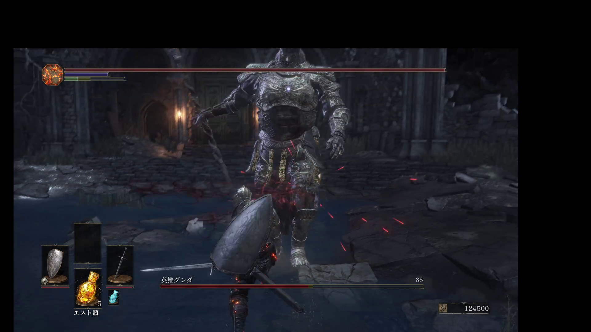
致命攻撃の報酬時間が終わり、ボスが再び戦闘可能状態へ戻る。
英雄グンダのパリィ成立から致命攻撃までの流れは、成功判定、VFX、敵リアクション、カメラ、ダメージUIを細かく分けて見せている。特に、接触80FからパリィVFX85F、敵リアクション92Fへと段階的に進むことで、プレイヤーは「受け止めた」「成功した」「敵が崩れた」を順番に認識できる。
致命攻撃では、33Fから溜め、39Fからカメラ寄り、48〜50Fで刺突、52Fでダメージ表示、56Fから出血VFXと続く。さらに、82Fから両手持ちに移行し、149F以降で剣を引き抜く二段目の報酬を作っている。操作不能時間は長いが、数十Fごとに新しい視覚情報が出るため、退屈になりにくい。
| 観点 | 分析結果 |
|---|---|
| 予備動作 | 41F〜62Fで攻撃を読ませ、63F以降に一気に加速する。 |
| 成功演出 | 接触、VFX、敵リアクションを数フレームずらして出す。 |
| 報酬演出 | 刺す、抜くの二段構成でパリィ成功の価値を大きく見せる。 |
| カメラ | ヒット前のズーム、沈み込み、ブラー、画面揺れで衝撃を補強する。 |
| 操作復帰 | 演出カメラからロックオンカメラへ段階的に戻し、致命開始から293Fで操作可能にする。 |
自作アクションで受け流しやパリィに近いシステムを作る場合、成功した瞬間にすべてを同時に出すのではなく、「接触 → 成功VFX → 敵リアクション → 反撃受付 → ダメージ → よろけ」の順で出すと、プレイヤーが成功を理解しやすい。